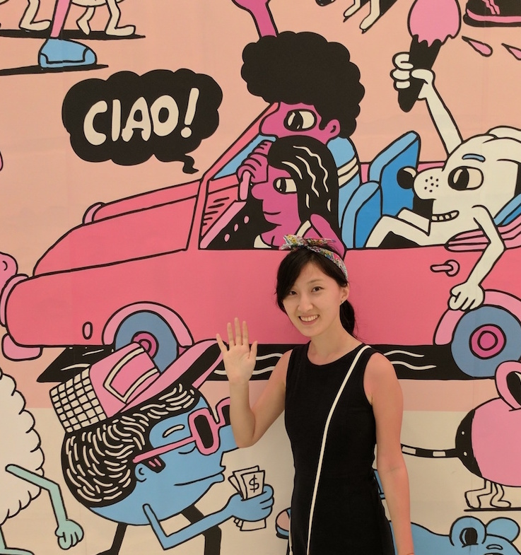

Inside the life of a curious 20s-something doodling, writing, and wandering about New York City

I'm Xiao —
As an avid admirer of art and design, I enjoy doodling and have dabbled in styles ranging from digital drawing to 3-D modeling.
Coming from an engineering background, I am also fascinated by the potential of big data and hope to merge the creative with the analytics to make better sense of the world.
This site is my platform to capture both the mundane happenings of my every day and the underrated joys of embarking on journeys of self-development.